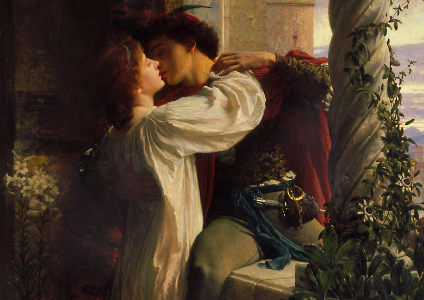
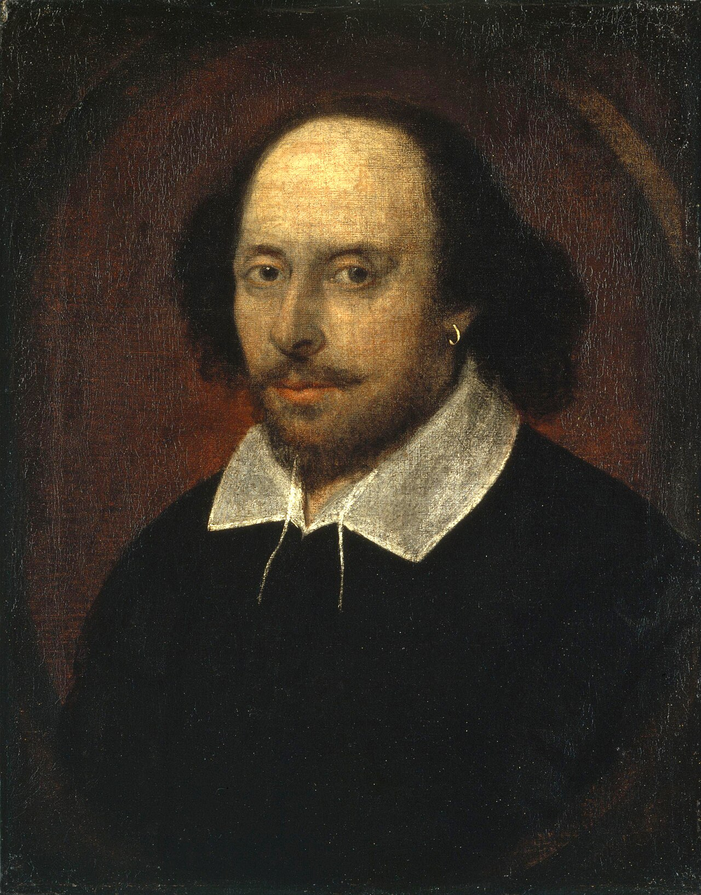
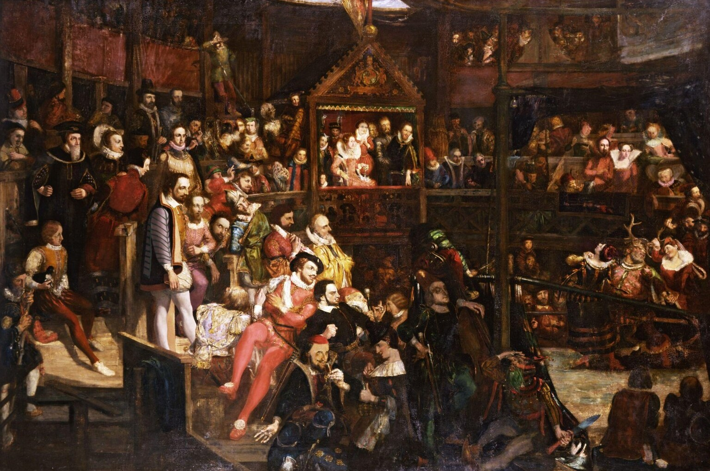

.jpg){kind=link}
In Context
Watch, analyse, write
Write an argumentative essay on how the film reinvents the myth of Shakespeare and the stage.
Shakespeare in Love · John Madden, 1998
Shakespeare in Love · Theatre Mirrored on Screen
- Terminale · B2
- Anglais · lycée général et technologique
- Axes: Fictions et réalités · Art et pouvoir
- Three lessons of 50 minutes, assessment included
A short sequence of three lessons, assessment included, centred on the film Shakespeare in Love by John Madden (1998).
Key question: How does contemporary cinema reinvent the myth of Shakespeare and the backstage of Elizabethan theatre?
London, 1593. Queen Elizabeth I rules England. Theatre is booming, and no woman may act on stage: young boys play the female roles. The film blurs the boundaries between fact and fiction to bring the Bard to life, between a playhouse in debt, a censor at the door, a queen who judges plays, and a love that becomes Romeo and Juliet.
© 2026 Madame Carole Paoli Pompougnac · CC BY-NC-SA 4.0
Teacher’s notes
| Rubrique | Contenu |
|---|---|
| Titre | Shakespeare in Love · Theatre Mirrored on Screen |
| Niveau | Terminale, lycée général et technologique · B2 (B2/C1 attendu en fin de séquence) |
| Axes | Fictions et réalités · Art et pouvoir |
| Durée | Trois leçons de 50 minutes, évaluation comprise (150 minutes). Le film dure 2 h 03 : on travaille sur des extraits clés. |
| Problématique | How does contemporary cinema reinvent the myth of Shakespeare and the backstage of Elizabethan theatre? |
| Question de l'activité Theatre and Power | Can a playwright tell the truth when he depends on the crown? |
| Tâche finale | Leçon 3 : Option A, essai argumenté de 250 à 300 mots, ou Option B, débat en binômes de 3 à 4 minutes. Grilles sur 20. |
| Documents | Portrait Chandos ; affiche originale du film ; ouverture du film (00:00 à 10:00) ; tableau de David Scott (1840) et mini-corpus Theatre and Power ; Romeo and Juliet, acte II, scène 2 ; scène du balcon du film ; Snow Patrol, « Chasing Cars » (2006), clip officiel. |
| Méthode | Spirale de Gorse appliquée au document principal de chaque leçon : le tableau de David Scott (leçon 1), l'extrait de l'acte II, scène 2 (leçon 2), le sujet d'évaluation (leçon 3). |
| Différenciation | Amorces de phrases à deux niveaux pour chaque production (Level 1 guidé, Level 2 B2+) ; Dys-friendly version ; version pour l'élève qui ne peut pas venir en classe ou est hospitalisé. |
Vue d'ensemble du minutage (150 minutes)
| Leçon | Dominante pédagogique | Répartition du temps (50 min) |
|---|---|---|
| Leçon 1 | Accroche culturelle et contexte (mythe et histoire), théâtre et pouvoir | 10' accroche + 20' analyse de l'ouverture du film + 10' Theatre and Power + 10' synthèse et trace écrite |
| Leçon 2 | Analyse filmique et littéraire (la fabrique d'un chef-d'œuvre) | 12' lecture de l'acte II, scène 2 + 20' scène du balcon + 8' Love in Shakespeare and in Rock + 10' paragraphe et trace écrite |
| Leçon 3 | Tâche finale évaluée (expression écrite ou orale) | Option A : 5' sujet et critères + 45' rédaction · Option B : 15' préparation + 35' passages |
Le minutage d'origine (leçon 1 : 10' + 25' + 15' ; leçon 2 : 15' + 25' + 10') a été resserré pour accueillir les deux activités nouvelles sans ajouter de leçon. Le visionnage du film à la maison, en amont de la leçon 1, est vivement conseillé : il rend possible un seul passage de l'ouverture en classe.
Note sur le film
Le film comporte quelques scènes intimes : on choisit les extraits en conséquence. Pour la leçon 2, on retient de préférence le second passage au balcon, quand Will grimpe jusqu'à Viola, puis le montage où leurs scènes d'amour et les répétitions de Romeo and Juliet s'entremêlent (environ 5 minutes). Le premier passage au balcon, plus bref, s'arrête avant le baiser.
Message à copier-coller (Pronote ou ENT)
Objet : Nouvelle séquence d'anglais · Shakespeare in Love (J. Madden, 1998)
Bonjour à tous,
Nous démarrons lors du prochain cours une nouvelle séquence courte (3 leçons, évaluation comprise) intitulée « Shakespeare in Love · Theatre Mirrored on Screen », centrée sur le film Shakespeare in Love de John Madden (1998).
Travail préparatoire avant la leçon 1 :
- Téléchargez et imprimez (ou enregistrez sur votre tablette) la fiche Vocabulary Toolbox jointe à ce message. Lisez le vocabulaire des catégories A et B.
- Recherche rapide (5 min) : Qui était la reine d'Angleterre en 1593 ? Quel célèbre théâtre londonien est associé à William Shakespeare ?
- (Optionnel mais vivement conseillé) Si vous avez accès au film en VOD ou en médiathèque, n'hésitez pas à le visionner en version originale sous-titrée anglais (VOST) avant le début de la séquence pour profiter pleinement des analyses d'extraits en classe.
Rappel du calendrier :
- Leçon 1 : Le Londres élisabéthain et le mythe de Shakespeare (analyse de la scène d'ouverture).
- Leçon 2 : De l'amour à l'écriture (étude comparée du texte de Romeo and Juliet et de la scène du balcon).
- Leçon 3 : Évaluation finale en classe (50 min).
Bon travail et à très vite en classe !
© 2026 Madame Carole Paoli Pompougnac · CC BY-NC-SA 4.0
Vocabulary Toolbox · Shakespeare in Love (John Madden, 1998)
Niveau Terminale · Axes : Fictions et réalités / Art et pouvoir
A. Elizabethan Theatre & Literature (Le théâtre élisabéthain)
| English | Français |
|---|---|
| A playwright / a bard | un dramaturge / un poète |
| A playhouse | un théâtre (ex : The Rose, The Globe) |
| The groundlings | les spectateurs debout dans la fosse (the pit) |
| A patron / patronage | un mécène / le mécénat |
| To rehearse / a rehearsal | répéter / une répétition |
| A quill | une plume d'oie pour écrire |
| Writer's block | l'angoisse de la page blanche |
| A cross-dresser / in disguise | personne travestie / déguisée |
| Master of the Revels | le maître des divertissements (censeur) |
| To perform / a performance | jouer sur scène / une représentation |
B. Film Analysis (L'analyse filmique)
| English | Français |
|---|---|
| A fictionalised biopic | un film biographique romancé |
| Anachronism / anachronistic | un anachronisme / anachronique |
| A mise en abyme (play within a play) | une mise en abyme |
| A close-up | un gros plan |
| Low-angle / high-angle shot | contre-plongée / plongée |
| A tracking shot | un travelling |
| Candlelight / warm lighting | lumière des bougies / éclairage chaud |
| The score / soundtrack | la musique originale / bande-son |
| To demystify / to humanise | désacraliser / humaniser |
| To portray / a portrayal | dépeindre / une représentation |
C. Useful Expressions for Essays & Debates (Argumenter)
| English | Français |
|---|---|
| To blur the boundaries between fact and fiction | brouiller les frontières entre réalité et fiction |
| To take artistic liberties (with History) | prendre des libertés artistiques (avec l'Histoire) |
| To bridge the gap between... and... | combler le fossé / faire le lien entre... et... |
| To challenge gender norms | remettre en question les normes de genre |
| On the one hand... on the other hand... | d'une part... d'autre part... |
| Whereas / While / Although | tandis que / alors que / bien que |
Historical Context Reminder (London, 1593)
- Queen Elizabeth I rules England. Theatre is booming, yet the authorities often close the playhouses because of the plague, and Puritan preachers attack them as immoral.
- No women on stage: acting is strictly reserved for men and young boys (who play female roles).
Supplement · Theatre and Power, Love in Shakespeare and in Rock
Mots nouveaux des deux activités ajoutées (leçons 1 et 2). La Vocabulary Toolbox ci-dessus reste inchangée.
| English | Français |
|---|---|
| The Lord Chamberlain's Men / the King's Men | la troupe de Shakespeare, protégée par le lord chambellan (1594), puis par le roi Jacques Ier (1603) |
| A court performance / to perform at court | une représentation à la cour / jouer devant la souveraine |
| To license a play / a licence | autoriser une pièce / une autorisation |
| To censor / censorship | censurer / la censure |
| To flatter / flattery | flatter / la flatterie |
| To commission (a play) | commander (une pièce) |
| A wager / to bet | un pari / parier |
| A legend / an anecdote | une légende / une anecdote |
| Lyrics / a verse / a chorus | les paroles / un couplet / un refrain |
| A love song / a power ballad | une chanson d'amour / une ballade rock |
| To shut out the world | fermer la porte au monde |
| Boundless / timeless | sans limites / intemporel |
© 2026 Madame Carole Paoli Pompougnac · CC BY-NC-SA 4.0
Lesson 1 · Reinventing the Myth of Shakespeare
Key question: How does contemporary cinema reinvent the myth of Shakespeare and the backstage of Elizabethan theatre?
The five language activities of the lesson
- CEReading comprehension30 to 40: the four facts on Theatre and Power.
- COListening comprehension10 to 30: the opening sequence of the film (00:00 to 10:00).
- PEWriting40 to 50: a 60 to 80 word paragraph, the fictionalised biopic.
- POSpeaking in continuous speech0 to 10: two faces of the Bard; the spirale on the David Scott painting.
- PIOral interaction30 to 40: in pairs, match the facts with the film and answer the key question.
For students
Key question: How does contemporary cinema reinvent the myth of Shakespeare and the backstage of Elizabethan theatre?
Today you will: compare two faces of the Bard, analyse the opening of the film at the Rose, discover who held power over the theatre, and write a short paragraph on the film as a fictionalised biopic.



Timed lesson plan (50 minutes)
| Minutes | Activité |
|---|---|
| 0 à 10 | Step 1 · Accroche iconographique : portrait Chandos et affiche du film. Ce que les élèves savent de Shakespeare et de l'époque élisabéthaine. |
| 10 à 30 | Step 2 · L'ouverture du film (00:00 à 10:00), un passage avec la grille, puis retour ciblé sur Will, Dr Moth et Henslowe pour les anachronismes (20 min au lieu de 25). |
| 30 à 40 | Theatre and Power · Le tableau de David Scott (spirale de Gorse), les quatre faits, les cinq moments du film, la question clé à l'oral (nouveau, 10 min). |
| 40 à 50 | Step 3 · Paragraphe de synthèse (60 à 80 mots) et trace écrite (10 min au lieu de 15). Le paragraphe peut être achevé à la maison. |
Le visionnage du film à la maison, annoncé par le message ENT, rend possible un seul passage complet de l'ouverture.
Step 1 · Visual Warm-Up: Two Faces of the Bard
Compare Document A (The Chandos Portrait, about 1600 to 1610) with Document B (the 1998 movie poster for Shakespeare in Love).
- Which physical or clothing details from the historical portrait are echoed by Joseph Fiennes on the poster?
- How does the movie poster build a different, more modern image of the playwright (posture, gaze, tagline, colours)?
Level 1 · guided
- In both pictures, I can see a man with...
- On the poster, his eyes are... and he is...
- The colours of the poster are...
Level 2 · B2+
- Both images share..., yet the poster turns the solemn writer into...
- Whereas the portrait looks straight at us, Fiennes...
- The tagline "Love is the only inspiration" suggests that...
Corrigé (prof), Step 1.
- A gold earring, dark hair, a short beard and a moustache, and a white collar: plain and open with loose strings in the portrait, frilled on the poster.
- In the portrait, Shakespeare looks straight at us, solemn and still. On the poster, Joseph Fiennes does not look at the viewer: his eyes are closed and he kisses Gwyneth Paltrow's forehead in a romantic embrace. Warm red and golden colours, the tagline "Love is the only inspiration" and the small silhouette of a man before a lit curtain sell him as a romantic hero rather than an intimidating literary icon.
Step 2 · Analysing the Opening Sequence (00:00 to 10:00)
First viewing: the historical setting (London, 1593). Complete the grid.
| Element observed | What the film shows at The Rose playhouse |
|---|---|
| The playhouse & audience | |
| Financial situation | |
| Social status of actors |
Second viewing: the artist's struggle & anachronisms.
- What creative crisis is William Shakespeare facing at the start of the film? Which prop on his desk illustrates this?
- Spot at least two deliberate anachronisms (modern references) hidden in these first ten minutes.
- What is the main purpose of these modern winks to the audience? (Tick the right answer)
- ☐ They are merely slapstick jokes meant to mock history.
- ☐ They bridge the gap between the 16th century and today by showing that an Elizabethan playwright faced modern pressures (writer's block, commercial demands).
- ☐ They prove that the filmmakers did not research the Elizabethan era properly.
Corrigé (prof), Step 2.
- Playhouse & audience: open-air wooden theatre (The Rose), noisy standing spectators (groundlings) in the pit, wealthy patrons in the galleries.
- Financial situation: dire; theatre owner Philip Henslowe is in debt and tortured over hot coals by Fennyman.
- Social status: low and precarious; the players depend on money and on the authorities, who can shut the playhouses. In the film, the Master of the Revels closes them; in reality, plague closures were ordered by the Privy Council, and the City of London, often hostile to the playhouses, called for them to close. The Master of the Revels was a royal censor, not a Puritan.
- Creative crisis: writer's block ("It's as if my quill is broken", he tells Dr Moth); crumpled pieces of paper all over his desk; he cannot write Romeo and Ethel the Pirate's Daughter.
- Anachronisms: Freudian psychoanalysis, Will on the couch with Dr Moth; a souvenir mug, "A Present from Stratford-upon-Avon"; Henslowe pitching theatre like a modern show-business producer.
- Purpose: the second box.
Theatre and Power · The Queen at the Playhouse
Key question: Can a playwright tell the truth when he depends on the crown?
Elizabethan theatre lived under the protection of the court. That is why it had to please power, and sometimes to dress up the truth.

_-_Queen_Elizabeth_(1533%E2%80%931603),_Viewing_the_Performance_of_%27The_Merry_Wives_of_Windsor%27_at_the_Globe_Theatre_-_S.511-1985_-_Victoria_and_Albert_Museum.jpg){kind=link}
Spirale de Gorse · Document A, the David Scott painting

Je remarque (I notice)
Your first impression: the crowd, the colours, where your eye goes first.
I notice... / This is about...
Je repère (I spot)
Find the Queen. Where is she placed? Then find the stage: who is acting?
I spot... / The key detail is...
Je comprends (I understand)
Who is watching whom? What does the frame around the Queen suggest?
This shows that... / The Queen is both... and...
J'anticipe (I anticipate)
The painting dates from 1840, about 240 years after the scene. What does the painter want us to feel about Shakespeare and the Queen?
The painter wants us to... / I anticipate...
Je trouve le sens (I find the meaning)
The point, and its limit: what does the painting say about theatre and power? Is it a document or a celebration?
The point is... / I keep to the painting: ... / Beyond this, other questions may arise.
Document B · Four facts
Fact 1 · Patrons
No company could play without the protection of a great lord. From 1594, Shakespeare's company was called the Lord Chamberlain's Men, after its patron, the Lord Chamberlain, a great officer of the Queen's household. In 1603, the new king, James I, became its patron: it was renamed the King's Men.
Fact 2 · Censorship
Every new play had to be read and licensed by the Master of the Revels, a court officer. Edmund Tilney held the post from 1579 to 1610. He could cut lines or ban a play.
Fact 3 · Plays at court
The best companies played before the Queen at court, mostly at Christmas, and were paid for each play. A payment of March 1595, for plays given before the Queen at Greenwich at Christmas 1594, names William Kemp, William Shakespeare and Richard Burbage.
Fact 4 · A legend
In 1702, the critic John Dennis wrote that the Queen commanded The Merry Wives of Windsor and wanted it finished in fourteen days. In 1709, Nicholas Rowe added that she wanted to see Falstaff in love. No document from Shakespeare's lifetime confirms it: it is a legend. And no record shows that Elizabeth ever watched a play in a public playhouse such as the Globe: the players came to her.
Document C · In the film
- At Whitehall Palace, Richard Burbage and Will Kempe perform Shakespeare's The Two Gentlemen of Verona before the Queen (Judi Dench).
- At Greenwich, Lord Wessex says that nature and truth are "the very enemies of playacting". Will bets fifty pounds, and the Queen asks: "Can a play show us the very truth and nature of love?" She will be the judge.
- Tilney, the Master of the Revels, closes the Rose "for displaying a female on the public stage".
- At the Curtain, the Queen, hidden in the audience, stops Tilney, forgives his "error" and tells Wessex he has lost the wager.
- Leaving, she asks for "something more cheerful next time for Twelfth Night".
Tasks
- Climb the spirale on the painting (Document A), orally, in pairs.
- Match each fact (Document B) with one moment of the film (Document C).
- Answer the key question in one sentence. You will reuse it in the written record of Lesson 2 and in Lesson 3.
Level 1 · guided
- The Queen is in the centre, in a box like...
- Fact 2 matches the moment when Tilney...
- A playwright depends on the Queen, so he must...
Level 2 · B2+
- The painter frames the Queen like a second stage, which suggests that...
- Just as the Master of the Revels could ban a play, Tilney...
- A playwright who depends on royal patronage has to flatter power; yet he can hide the truth in...
Corrigé (prof), Theatre and Power.
- Spirale: 1. A crowded, dark wooden playhouse, warm reds; the eye goes to the lit box at the centre. 2. The Queen sits in a raised, carved box, framed like a small stage; on the stage at the right, a large man wears antlers: Falstaff in the last act of The Merry Wives of Windsor. 3. Many spectators look at the Queen rather than at the play: she is a second spectacle, and the play is performed under her gaze. 4. In 1840, the painter celebrates two national glories, Shakespeare and the Queen, in a scene that probably never happened. 5. The painting shows theatre as a royal pleasure, and it flatters power itself, like the theatre it shows; its limit: it is a Victorian image, not a historical document.
- Matching: Fact 1 and moment 1 (the company plays for the Queen at Whitehall; in the film Will is told "Next time you come to Greenwich, come as yourself"); Fact 2 and moment 3 (Tilney closes the Rose); Fact 3 and moments 1 and 2 (the court is where plays are judged); Fact 4 and moment 5 (the Queen orders a play, like the legend of The Merry Wives). Wessex, the nobleman who despises playacting, loses his fifty pounds: in the film, the Queen sides with the theatre.
- Fiction and reality: the film shows Tilney closing the playhouses for the plague, a power that belonged to the Privy Council; Twelfth Night dates from about 1601, not 1593.
- Key question, model answer: A playwright who depends on the crown cannot say everything: he must flatter the Queen and please the censor. That is why theatre lies. Yet, behind comedy and disguise, it can still tell a deeper truth about love and power.
Step 3 · Wrap-Up & Written Synthesis
Write a short paragraph (60 to 80 words) answering: Why can Shakespeare in Love be described as a "fictionalised biopic"?
Use: Elizabethan era · historical accuracy · deliberate anachronisms · to demystify the literary genius · relatable.
Level 1 · guided
- Shakespeare in Love is a fictionalised biopic because...
- The film shows real things, like... But it also invents...
- Will is relatable because...
Level 2 · B2+
- The film blends historical accuracy, such as..., with deliberate anachronisms like...
- By turning Shakespeare into..., the film demystifies...
- Far from a history lesson, the film...
Corrigé (prof), Step 3.
Model paragraph. Shakespeare in Love can be described as a fictionalised biopic because it blends historical accuracy, such as the vibrant atmosphere of Elizabethan playhouses, with deliberate anachronisms like psychoanalysis. By turning Shakespeare into a relatable young writer struggling with writer's block, the film demystifies the literary genius and turns him into an accessible hero for modern audiences.
Lesson summary
Copy it into your exercise book.
Un biopic fantasmé (a fictionalised biopic) : un film biographique qui mêle des faits réels (le théâtre du Rose, les groundlings, les dettes de Henslowe, l'interdiction des femmes sur scène) et des inventions assumées (l'histoire d'amour avec Viola, les anachronismes comme la psychanalyse ou la tasse souvenir).
Problématique : Comment le film modernise-t-il l'image du génie littéraire ?
Théâtre et pouvoir : une troupe vit sous la protection d'un grand seigneur ou du souverain ; le maître des divertissements autorise ou censure les pièces. Le théâtre doit plaire au pouvoir.
Plan B
Key question: How does contemporary cinema reinvent the myth of Shakespeare?
Look at the portrait and the poster: write two differences. Then copy Fact 2 (the Master of the Revels) and say which character plays this role in the film.
Homework
Finish your paragraph on the fictionalised biopic (60 to 80 words). Learn parts A and B of the Vocabulary Toolbox and the Theatre and Power words of the Supplement.
Corrigé (prof), homework.
See the model paragraph of Step 3. Check: the five words of the box, present simple to analyse the film, past simple for 1593.
Étude de la langue · present simple and past simple
Utilisez le présent simple pour analyser le film et le prétérit pour les faits historiques (1593).
- In the film, Henslowe owes money to Fennyman. (analysis: present simple)
- In 1594, Shakespeare's company took the name of the Lord Chamberlain's Men. (history: past simple)
Practice. Put the verbs in the right tense: 1. In the opening scene, Will (suffer) from writer's block. 2. Edmund Tilney (become) Master of the Revels in 1579. 3. The poster (show) Fiennes with his eyes closed. 4. In 1603, James I (take) the company under his patronage.
Corrigé (prof), tenses.
1. suffers · 2. became · 3. shows · 4. took
Fiche bilan · Lesson 1
- ☐ I can explain what a fictionalised biopic is, with one real fact and one invention from the film.
- ☐ I can name two deliberate anachronisms in the opening sequence.
- ☐ I can say who protected and who censored the players (patron, Master of the Revels).
- ☐ I have one sentence ready on the key question: can a playwright tell the truth when he depends on the crown?
My five new words: ................................................
My sentence on the key question: ................................................
Dys-friendly version · Lesson 1
- Step 1. Look at the portrait and the poster. Find one thing that is the same: the earring, the beard, the white collar.
- Step 2. Watch the opening. Fill in one line of the grid only: the playhouse.
- Step 3. The painting: find the Queen. Say: The Queen is in the centre.
- Step 4. Read Fact 2 only. Tilney is the censor. He closes the Rose.
- Step 5. Write two sentences: The film is a fictionalised biopic. It mixes real facts and inventions.
If a student cannot attend class or is in hospital
Work alone, one task at a time. Hand in the paragraph of Step 3 and your answer to the key question.
- Compare the portrait and the poster: write two similarities and two differences.
- If you can, watch the first ten minutes of the film; otherwise read the Historical Context Reminder of the Toolbox.
- Look at the David Scott painting and read the four facts. Answer: Can a playwright tell the truth when he depends on the crown?
- Write the paragraph of Step 3 (60 to 80 words).
Answer key and grids
Keys are under Show the key in each activity. The grids of the final task are in the Évaluations tab (Teacher version).
© 2026 Madame Carole Paoli Pompougnac · CC BY-NC-SA 4.0
Lesson 2 · From Love to Literature: the Balcony Scene
Focus: comparing Shakespeare's original text (Romeo and Juliet, Act II, Scene 2) with its film adaptation, and with a love song of today.
The five language activities of the lesson
- CEReading comprehension0 to 12: Romeo and Juliet, Act II, Scene 2.
- COListening comprehension12 to 32: the balcony scene in the film; 32 to 40: « Chasing Cars ».
- PEWriting40 to 50: a 50 to 70 word paragraph and the written record.
- POSpeaking in continuous speechThe spirale on the extract; Shakespeare and Snow Patrol, compared aloud.
- PIOral interaction12 to 32: the film grid in pairs.
For students
Today you will: read the most famous love scene in English, see how the film turns it into Will and Viola's story, and hear how a rock song of 2006 dreams the same dream.
Timed lesson plan (50 minutes)
| Minutes | Activité |
|---|---|
| 0 à 12 | Step 1 · Mise en route (Viola déguisée en Thomas Kent, les femmes exclues de la scène), lecture de l'acte II, scène 2 et spirale de Gorse (12 min au lieu de 15). |
| 12 à 32 | Step 2 · La scène du balcon dans le film (environ 5 minutes), deux passages, grille en binômes et question clé (20 min au lieu de 25). |
| 32 à 40 | Love in Shakespeare and in Rock · « Chasing Cars », clip officiel jusqu'à la fin du premier refrain, puis les vers de l'acte II, scène 2 (nouveau, 8 min). |
| 40 à 50 | Step 3 · Paragraphe de 50 à 70 mots, puis trace écrite, avec la phrase sur théâtre et pouvoir préparée en leçon 1 (10 min). |
Step 1 · Reading the Original Play
ROMEO: But soft! What light through yonder window breaks?
It is the east, and Juliet is the sun.
Arise, fair sun, and kill the envious moon,
Who is already sick and pale with grief
That thou, her maid, art far more fair than she. [...]
JULIET: O Romeo, Romeo! Wherefore art thou Romeo?
Deny thy father and refuse thy name;
Or, if thou wilt not, be but sworn my love,
And I'll no longer be a Capulet.
William Shakespeare, Romeo and Juliet, Act II, Scene 2. Public domain.
Spirale de Gorse · Romeo and Juliet, Act II, Scene 2
Je remarque (I notice)
Who speaks? Where? At what time of day? Your first impression of the tone.
I notice... / This is about...
Je repère (I spot)
Spot the images of light and the words of family (father, name, Capulet).
I spot... / The key word is...
Je comprends (I understand)
What does Romeo turn Juliet into? What does Juliet ask Romeo to give up?
This shows that... / They have in common...
J'anticipe (I anticipate)
The two lovers belong to enemy families. What can this love lead to?
The text wants me to... / I anticipate...
Je trouve le sens (I find the meaning)
The point, and its limit: love lifts the lovers above the world, but the world (names, families) is still there.
The point is... / I keep to the text: ... / Beyond this, other questions may arise.
- Pick out the natural metaphors Romeo uses to describe Juliet. What effect do they create?
- What does "Wherefore art thou Romeo?" actually mean? (Circle the right answer)
- a) Where are you hiding, Romeo?
- b) Why do you have to be a Montague (my family's enemy)?
- c) Who is Romeo?
Level 1 · guided
- Romeo compares Juliet to...
- The sun is... and the moon is...
- Juliet wants Romeo to...
Level 2 · B2+
- Through the metaphor of the sun, Romeo elevates Juliet to...
- The image of the envious moon suggests that...
- "Wherefore" means "why": Juliet is not looking for Romeo, she is...
Corrigé (prof), Step 1.
- Light and sun metaphors ("Juliet is the sun") elevate Juliet to a celestial, life-giving force that outshines the moon.
- b) (wherefore = why): she laments his family name, not his physical location.
Spirale, completed: 1. Night, a garden and a window: Romeo speaks, then Juliet, who does not know he hears her; the tone is ecstatic. 2. Light, east, sun, moon, fair; father, name, Capulet. 3. Romeo turns Juliet into a sun; Juliet asks Romeo to give up his name and is ready to give up hers. 4. Enemy families: this love is threatened from the start. 5. Love lifts the lovers above the world, but the world, names and families, is still there and will catch up with them.
Step 2 · Film Analysis: the Balcony Scene in Shakespeare in Love
| Film technique | Observation in the scene | Dramatic / symbolic effect |
|---|---|---|
| Camera angles & movement | ||
| Lighting & colours | ||
| Sound & music | ||
| Dialogue & acting |
Key question: How does John Madden show that Will is simultaneously living his love story and writing his play?
Level 1 · guided
- In this scene, the camera shows...
- The light is... like the sun in the play.
- Will says words from...
Level 2 · B2+
- The camera moves from... to..., which shows that...
- Thanks to a mise en abyme, the film...
- Life and art merge when...
Corrigé (prof), Step 2.
- Camera angles: low-angle shots looking up at Viola (idealisation) and high-angle shots looking down at Will; circular tracking shots conveying passion.
- Lighting: warm golden candlelight contrasting with the dark blue night, echoing the text's sun and light imagery.
- Sound and music: sweeping orchestral score swelling as their kisses turn into verse; whispered dialogue.
- Dialogue and acting: seamless shift from breathless modern banter to Shakespeare's famous iambic pentameter lines, showing that life directly inspires art.
These observations fit the second balcony passage and the montage that follows, where the love scenes and the rehearsals of Romeo and Juliet are intercut.
Love in Shakespeare and in Rock
Four centuries apart, the same dream: two lovers who stop time and shut out the world. Listen to the official video up to the end of the first chorus, then read the lines.
ROMEO: I have night's cloak to hide me from their eyes.
JULIET: Deny thy father and refuse thy name.
JULIET: My bounty is as boundless as the sea,
My love as deep; the more I give to thee,
The more I have, for both are infinite.
William Shakespeare, Romeo and Juliet, Act II, Scene 2. Public domain.
If I lay here
If I just lay here
Would you lie with me and just forget the world?
Snow Patrol, « Chasing Cars », album Eyes Open, 2006 (Polydor). Short quotation for teaching; full lyrics in the official video.
Watch the official video: Snow Patrol, Chasing Cars
- What does the singer ask the person he loves?
- Find one line where Romeo and Juliet shut out the world, and one line where love has no limit.
- What do the play and the song share? What is different (images, words, tone)?
Level 1 · guided
- The singer asks... to...
- Juliet wants Romeo to forget... The singer wants to forget...
- Juliet's love is like the sea: it is...
Level 2 · B2+
- Whereas Juliet's love is as boundless as the sea, the song reduces the whole world to...
- Both texts shut the world out: Romeo hides under night's cloak, while the singer...
- The song says in plain, understated words what Shakespeare says in...
Corrigé (prof), Love in Shakespeare and in Rock.
- He asks: if he just lies here, would she lie with him and just forget the world?
- Shutting out the world: "I have night's cloak to hide me from their eyes"; "Deny thy father and refuse thy name". No limit: "My bounty is as boundless as the sea, / My love as deep", "both are infinite".
- Shared: an absolute, unconditional love; the lovers alone, outside time and outside the world. Different: Shakespeare uses cosmic images (sun, moon, sea) and verse; the song uses plain, everyday words, repetition and a quiet, understated tone; Romeo and Juliet are threatened by their families, the song asks only to stay still together.
Step 3 · Short Paragraph
In 50 to 70 words, explain how the film illustrates the idea that personal passion fuels artistic creation.
Level 1 · guided
- Will is in love with Viola, so he...
- His words to Viola become...
- The film shows that love...
Level 2 · B2+
- The more Will loves Viola, the more...
- Through a mise en abyme, the balcony scene shows that...
- Far from a lonely genius, the film's Shakespeare...
Corrigé (prof), Step 3.
Model paragraph. In Shakespeare in Love, Will's passion for Viola cures his writer's block: the words they exchange in secret become the lines of Romeo and Juliet. Through a mise en abyme, the film intercuts their love scenes with rehearsals of the play, so that life and art merge. The film thus suggests that personal passion is the true source of artistic creation.
Lesson summary
Copy it into your exercise book.
De l'amour à l'écriture : dans le film, la vie privée nourrit la création. Les mots que Will échange avec Viola deviennent ceux de Roméo et Juliette : c'est une mise en abyme. La caméra, la lumière dorée et la musique unissent l'amour vécu et l'amour écrit.
Théâtre et pouvoir : le théâtre élisabéthain dépend du mécénat royal et de la censure du maître des divertissements. C'est pour cela que le théâtre ment, ou flatte : il doit plaire au pouvoir. Mais, sous la comédie et le déguisement, il peut dire une vérité plus profonde sur l'amour et sur le pouvoir.
Ma phrase (question de la leçon 1) : Can a playwright tell the truth when he depends on the crown? ................................................
D'hier à aujourd'hui : de Juliette (« My bounty is as boundless as the sea ») à « Chasing Cars » de Snow Patrol (2006), le même amour absolu, qui arrête le temps et ferme la porte au monde.
Plan B
Read the extract. Copy the line where Juliet asks Romeo to give up his name. Then write one sentence: In the film, Will's love for Viola becomes...
Homework
Learn part C of the Vocabulary Toolbox. Prepare Lesson 3: choose your option (A, essay, or B, debate) and write three ideas with one example each from the film, the painting or the song.
Corrigé (prof), homework.
Check that each idea has a precise example: the Rose, the balcony scene, Viola as Thomas Kent, Tilney, the wager, the David Scott painting, or « Chasing Cars ».
Étude de la langue · comparing: whereas, while, although
Pour comparer deux documents : whereas / while (tandis que, alors que), although (bien que).
- Whereas Shakespeare uses images of the sun, the song uses everyday words.
- Although they live four centuries apart, both lovers want to forget the world.
Practice. Link with the word given: 1. Romeo speaks in verse. Will speaks in modern banter at first. (whereas) 2. The film invents a love story. It respects the spirit of the era. (although) 3. The portrait is solemn. The poster is romantic. (while)
Corrigé (prof), comparing.
1. Whereas Romeo speaks in verse, Will speaks in modern banter at first. 2. Although the film invents a love story, it respects the spirit of the era. 3. While the portrait is solemn, the poster is romantic.
Fiche bilan · Lesson 2
- ☐ I can explain the sun metaphor and the meaning of "wherefore".
- ☐ I can describe two film techniques of the balcony scene and their effect.
- ☐ I can explain the mise en abyme: life becomes art.
- ☐ I can compare one line of Act II, Scene 2 with « Chasing Cars ».
- ☐ My sentence on theatre and power is in my written record.
My three new words: ................................................
Dys-friendly version · Lesson 2
- Step 1. Read the two first lines only. Juliet is the sun.
- Step 2. "Wherefore" means "why". Juliet asks: why are you a Montague?
- Step 3. Watch the balcony scene. Say one thing about the light: it is golden.
- Step 4. Listen to « Chasing Cars ». The singer wants to forget the world. Juliet wants to forget names.
- Step 5. Write two sentences: Will loves Viola. His love becomes a play.
If a student cannot attend class or is in hospital
Work alone, one task at a time. Hand in the paragraph of Step 3.
- Read the extract and answer questions 1 and 2 of Step 1.
- If you can, watch the balcony scene of the film; fill in two lines of the grid.
- Watch the official video of « Chasing Cars » and compare it with Juliet's lines.
- Write the paragraph of Step 3 (50 to 70 words) and copy the written record.
Answer key and grids
Keys are under Show the key in each activity.
© 2026 Madame Carole Paoli Pompougnac · CC BY-NC-SA 4.0
Lesson 3 · Summative Assessment & Essay Methodology
Choose Option A (Written Essay) or Option B (Oral Roleplay Debate) as instructed by your teacher.
The five language activities of the lesson
- CEReading comprehension0 to 5: reading the prompt, with the spirale.
- COListening comprehensionOption B: listening to your partner and reacting.
- PEWritingOption A: an argumentative essay, 250 to 300 words.
- POSpeaking in continuous speechOption B: defending a role for 3 to 4 minutes.
- PIOral interactionOption B: the roleplay debate in pairs.
For students
Today you will: show what you have learnt, in writing or orally. Reuse the facts, scenes, lines and words of Lessons 1 and 2.
Timed lesson plan (50 minutes)
| Minutes | Option A · essai | Option B · débat |
|---|---|---|
| 0 à 5 | Distribution du sujet et des critères ; spirale de Gorse sur le sujet. | Préparation en binômes (0 à 15). |
| 5 à 50 | Rédaction individuelle (250 à 300 mots). | 15 à 50 : passages de 3 à 4 minutes par binôme (environ 8 à 10 binômes ; les autres au début du cours suivant). |
Les sujets 3 et 4 et les deux situations de débat ajoutées prolongent les activités des leçons 1 et 2 ; les grilles restent les mêmes.
Choose Option A (Written Essay) or Option B (Oral Roleplay Debate) as instructed by your teacher.
Option A · Written Assessment (Argumentative Essay)
Choose ONE of the following prompts and write a structured essay of 250 to 300 words in English. Use specific examples from Shakespeare in Love and the Elizabethan context studied in class.
- Prompt 1: Does cinema have the right to rewrite History and invent facts to make a literary figure more appealing to modern audiences?
- Prompt 2: To what extent is Viola de Lesseps a modern feminist heroine trapped in an Elizabethan world?
Two further prompts, from Lessons 1 and 2:
- Prompt 3 · Theatre and Power: Can a playwright tell the truth when he depends on the crown? Use Shakespeare in Love, the David Scott painting and the Elizabethan context.
- Prompt 4 · Love in Shakespeare and in Rock: Is the love of Romeo and Juliet still alive in today's love songs? Compare Act II, Scene 2 with « Chasing Cars » by Snow Patrol (2006).
Spirale de Gorse · reading the prompt
Je remarque (I notice)
Read your prompt twice. What is it about?
I notice... / This prompt is about...
Je repère (I spot)
Underline the key words (right, rewrite, to what extent, truth, crown, love).
I spot... / The key word is...
Je comprends (I understand)
What exactly is asked: yes or no, how far, why?
This means that... / The question asks me to...
J'anticipe (I anticipate)
Plan two sides: on the one hand, on the other hand. Choose your examples.
I will first show... then...
Je trouve le sens (I find the meaning)
Your answer, and its limit. Stay on the question: no plot summary.
My answer is... / I keep to the question: ... / Beyond this, other questions may arise.
Méthodologie de l'essai argumenté en anglais (Terminale)
Les 4 étapes clés pour réussir votre essai (250 à 300 mots) :
- Introduction (env. 40 à 50 mots) : accroche (hook) : présentez brièvement le film (titre, réalisateur, année) et le thème général. Problématique : reformulez la question du sujet sans la recopier mot pour mot.
- Paragraphe 1 · Thèse / premier point de vue (env. 90 à 100 mots) : commencez par un connecteur logique (On the one hand, / First of all,). Énoncez une idée directrice claire, expliquez-la, puis illustrez-la par un exemple précis du film ou du contexte historique.
- Paragraphe 2 · Antithèse / nuance (env. 90 à 100 mots) : introduisez l'opposition ou le dépassement (On the other hand, / However, / Yet,). Apportez un argument nuancé appuyé sur une scène précise, un procédé filmique ou un élément historique.
- Conclusion (env. 40 à 50 mots) : faites le bilan de votre réflexion (In conclusion, / To conclude,) en répondant clairement à la problématique, sans introduire de nouvel argument.
Conseils de langue : utilisez le présent simple pour analyser le film et le prétérit pour les faits historiques (1593). Évitez les contractions familières (écrivez does not plutôt que doesn't) et comptez vos mots à la fin.
Level 1 · guided
- In Shakespeare in Love (1998), John Madden...
- On the one hand,... For example,...
- On the other hand,...
- In conclusion, I think that...
Level 2 · B2+
- This raises a key question: ...
- Historical purists may argue that..., yet...
- A playwright who depends on royal patronage...
- Four centuries later, « Chasing Cars » shows that...
Option B · Oral Interaction Assessment (Roleplay Debate)
Organisation: 15 mins preparation in pairs + 3 to 4 mins live debate per pair (no reading from notes).
Situation: After watching the premiere of Shakespeare in Love in 1998, two people argue outside the cinema:
- Student A (The Purist Historian): You are shocked by the historical inaccuracies, invented romance, and modern jokes. Defend strict academic respect for Shakespeare's legacy.
- Student B (The Film Director): Defend your artistic freedom. Explain how mixing fiction, romance, and humour makes Shakespeare's genius alive and accessible to everyone.
Two further situations, from Lessons 1 and 2:
- The censor and the playwright. Student A, Edmund Tilney, Master of the Revels, defends the crown's right to read, cut and ban plays. Student B, the playwright, defends his freedom and explains how he can still tell the truth through comedy and disguise.
- The Bard and the band. Student A, a Shakespeare purist, says that rock love songs are simple and repetitive, nothing like Shakespeare's verse. Student B, a rock fan, shows that « Chasing Cars » carries the same absolute love: stop time, forget the world.
Useful Debate Phrases: Expressing disagreement politely: "I understand what you mean, yet..." / "That may be true, but you are overlooking the fact that..." · Highlighting a point: "What matters most here is..." / "Take the balcony scene, for instance..."
Level 1 · guided
- I think that... because...
- I don't agree with you: ...
- Look at the scene where...
Level 2 · B2+
- I see your point; however, you are overlooking...
- What matters most here is...
- Even if the crown controlled the stage, ...
Student Assessment Guide & Self-Checklist
To reach the highest level (B2 / C1), make sure you combine three dimensions:
- Historical awareness: Show you understand London in 1593 (The Rose, groundlings, censorship, ban on actresses).
- Film literacy: Refer to specific scenes (opening sequence, balcony scene) and cinematic techniques (anachronisms, mise en abyme, lighting, camera angles).
- Structured argumentation: Contrast viewpoints clearly (On the one hand... On the other hand...) rather than just summarising the plot.
If you chose Option A (Written Essay: 250 to 300 words)
- ☐ Structure: My essay has a clear introduction (hook + research question), two balanced body paragraphs, and a concise conclusion.
- ☐ Content: I used at least 3 specific examples from Shakespeare in Love and the Elizabethan context (no mere plot summary).
- ☐ Vocabulary: I included at least 5 keywords from the Vocabulary Toolbox (e.g. playwright, groundlings, anachronism, demystify).
- ☐ Grammar & Tenses: I used the present simple to analyse the film and the past simple for historical facts (1593).
- ☐ Word count: I counted my words and wrote the total at the end (between 250 and 300 words).
If you chose Option B (Oral Roleplay Debate: 3 to 4 mins)
- ☐ Interaction: We listen to each other, react directly to our partner's arguments ("I see your point, however..."), and keep the debate lively.
- ☐ Role consistency: Student A defends historical accuracy; Student B defends artistic freedom and accessibility.
- ☐ Delivery: We speak naturally without reading full sentences from our notes, paying attention to word stress and intonation.
Corrigé (prof), Lesson 3, model essays and outlines.
Model Essay · Prompt 1 (282 words)
"Does cinema have the right to rewrite History and invent facts to make a literary figure more appealing to modern audiences?"
William Shakespeare is often perceived by students as an intimidating, almost mythical literary monument. In Shakespeare in Love (1998), director John Madden deliberately blurs the boundaries between fact and fiction to present a vibrant, romanticised version of the playwright. This raises a key question: is cinema justified in taking artistic liberties with History to make cultural icons more accessible?
On the one hand, historical purists may argue that inventing a fictional romance between Shakespeare and Viola de Lesseps distorts reality. In 1593, Shakespeare was already married, and there is no historical evidence that Romeo and Juliet was inspired by a secret affair with a noblewoman disguised as a male actor. Moreover, the film's deliberate anachronisms, such as Freudian psychoanalysis on Dr Moth's couch or a souvenir mug from Stratford-upon-Avon, clearly sacrifice strict historical accuracy for comedic effect.
On the other hand, cinema is not a history textbook; its primary goal is to engage and move an audience. By portraying Shakespeare as a relatable young artist suffering from writer's block and financial pressure, Madden successfully demystifies the literary genius. Furthermore, the film remains deeply faithful to the spirit of the Elizabethan era. Through its depiction of The Rose playhouse, the rowdy groundlings, and the exclusion of women from the stage, it vividly brings 16th-century London to life while using mise en abyme to show how personal passion fuels artistic creation.
In conclusion, while Shakespeare in Love should not be watched as a factual biography, its creative freedom is entirely legitimate. By bridging the gap between the past and the present with wit and emotion, the film invites modern audiences to rediscover Shakespeare's plays as living, passionate works of art rather than dusty classics.
Model Essay · Prompt 2 (267 words)
"To what extent is Viola de Lesseps a modern feminist heroine trapped in an Elizabethan world?"
In 16th-century England, women were kept off the public stage and treated largely as property in arranged aristocratic marriages. In Shakespeare in Love (1998), Gwyneth Paltrow's character, Viola de Lesseps, boldly defies these restrictions, raising the question of how far she embodies a modern feminist heroine within an Elizabethan setting.
On the one hand, Viola displays remarkable independence and agency that resonate with modern audiences. Passionate about poetry and theatre, she refuses to remain a passive spectator. By disguising herself as a young man named Thomas Kent, she actively challenges gender norms and becomes, in the film, the first woman to perform on a London stage. Even in her personal life, she resents the loveless marriage arranged by her father with the arrogant Lord Wessex, and chooses to follow her intellectual and romantic desires with Shakespeare.
On the other hand, John Madden avoids turning her rebellion into an unrealistic fairy tale, reminding viewers of the harsh patriarchal constraints of the Elizabethan era. Despite her talent and courage, Viola is ultimately powerless against royal authority and her father's financial ambition. She has to marry Lord Wessex, and when her disguise is exposed on stage, the Queen refuses to undo the marriage: Viola must leave England for the Virginia colony with her husband, proving that a woman in 1593 could not fully escape her social destiny.
In conclusion, Viola de Lesseps is both a modern feminist icon and a tragic victim of her time. Although she cannot permanently overthrow Elizabethan patriarchy, her artistic passion and courage leave a lasting mark on Shakespeare's work, immortalising her spirit through his plays.
Prompt 3 · outline
- Thesis: he cannot say everything. A company lives under a patron (the Lord Chamberlain's Men, then the King's Men in 1603); the Master of the Revels licenses and cuts plays; the David Scott painting itself flatters the Queen. In the film, Tilney closes the Rose and the Queen judges plays.
- Antithesis: comedy, disguise and fiction let him tell a deeper truth. In the film, the Queen admits that a play can show "the very truth and nature of love"; Viola in disguise tells the truth of a woman in a man's world.
- Conclusion: theatre lies, or flatters, to survive; its truth hides under the mask.
Prompt 4 · outline
- Thesis: yes. The same absolute love: "My bounty is as boundless as the sea"; the lovers shut out the world ("night's cloak", "Deny thy father and refuse thy name"); the song asks to "just forget the world".
- Antithesis: the forms differ. Verse and cosmic images on one side, plain repeated words and an understated tone on the other; Romeo and Juliet die for their love, the song asks only to stay still together.
- Conclusion: four centuries apart, the dream is the same; the language has changed.
Lesson summary
Copy it into your exercise book.
Pas de trace écrite nouvelle : la leçon 3 réinvestit les traces écrites des leçons 1 et 2.
Plan B
Choose one prompt. Write an introduction (40 to 50 words) and one body paragraph with one example from the film.
Homework
After the correction, rewrite one paragraph of your essay, or write down three arguments of your partner in the debate and answer them.
Étude de la langue · linking words
Structurez votre propos avec des connecteurs variés.
- Adding: furthermore, moreover
- Contrasting: whereas, on the one hand... on the other hand, nevertheless, yet
- Concluding: in conclusion, to conclude
Practice. Complete: 1. The film invents a love affair; ......, it respects the spirit of the era. 2. Tilney could ban a play. ......, the Queen could protect the players. 3. ......, the film is not a biography, but a celebration of theatre.
Corrigé (prof), linking words.
1. nevertheless / yet · 2. However / Yet · 3. In conclusion / To conclude
Fiche bilan · Lesson 3 and the sequence
- ☐ My main strength in this task is: ................................................
- ☐ One thing I double-checked / improved: ................................................
- ☐ I reused at least five words of the Vocabulary Toolbox.
- ☐ I used at least three precise examples (film, painting, play, song).
Dys-friendly version · Lesson 3
- Step 1. Choose one prompt. Underline two key words.
- Step 2. Write your answer in one sentence.
- Step 3. Write one reason with one example from the film.
- Step 4. Write one reason against, with one example.
- Step 5. Conclude in one sentence. Count your words.
If a student cannot attend class or is in hospital
Option A only: write the essay at home on one prompt and hand it in. Your teacher will give you the grid.
Answer key and grids
The model essays are under Show the key. The grids are in the Évaluations tab.
© 2026 Madame Carole Paoli Pompougnac · CC BY-NC-SA 4.0
Assessments
Sujets : leçon 3, Option A (sujets 1 à 4) et Option B (trois situations). Les corrigés types sont dans la leçon 3, sous Show the key.
Grille d'évaluation professeur · Leçon 3 (Terminale)
Nom / Prénom : ........................................ Classe : .............. Option choisie : ☐ A (Écrit) ☐ B (Oral)
Option A : Expression écrite · Essai argumenté (250 à 300 mots)
| Critères | Insuffisant (0 à 1,5) | Fragile (2 à 2,5) | Satisfaisant (3 à 4) | Très bien (4,5 à 5) |
|---|---|---|---|---|
| 1. Compréhension & Argumentation (/5) | Hors-sujet ou propos superficiel. | Idées présentes mais peu développées. | Problématique comprise, plan clair et illustré. | Réflexion nuancée, structurée, exemples précis. |
| 2. Références culturelles & filmiques (/5) | Aucune référence précise au film ou contexte. | Allusions vagues au film. | Bon réinvestissement du cours (film + contexte). | Maîtrise fine des procédés filmiques et historiques. |
| 3. Correction grammaticale (/5) | Erreurs fréquentes gênant la lecture. | Structures simples, erreurs récurrentes. | Langue globalement correcte et compréhensible. | Syntaxe variée, maîtrise des temps et modaux. |
| 4. Richesse lexicale (/5) | Vocabulaire pauvre ou calqué du français. | Lexique répétitif, peu de connecteurs. | Vocabulaire adapté (cinéma, théâtre). | Lexique riche, idiomatique ; connecteurs variés. |
Option B : Expression orale en interaction · Débat en binômes (3 à 4 min)
| Critères | Insuffisant (0 à 1,5) | Fragile (2 à 2,5) | Satisfaisant (3 à 4) | Très bien (4,5 à 5) |
|---|---|---|---|---|
| 1. Réalisation de la tâche & Interaction (/5) | Monologues juxtaposés, pas d'écoute. | Échange limité, réactions hésitantes. | Dialogue vivant, prise en compte de l'autre. | Débat dynamique, spontané et convaincant. |
| 2. Pertinence des arguments (/5) | Arguments absents ou hors-sujet. | Idées générales sans lien précis avec le film. | Arguments solides appuyés sur le cours. | Argumentation riche (histoire + esthétique). |
| 3. Correction & Richesse de la langue (/5) | Énoncés fragmentés, erreurs bloquantes. | Langue simple, lexique limité. | Discours fluide, lexique du cours réinvesti. | Expressions idiomatiques du débat, syntaxe riche. |
| 4. Phonologie & Aisance (/5) | Lecture de notes permanente. | Débit haché, forte dépendance aux notes. | Détachement des notes, intonation claire. | Prise de parole naturelle, accentuation juste. |
NOTE FINALE : ........... / 20 (Respect du format / longueur : ☐ Oui ☐ Non)
Appréciation et conseils de progression : ..........................................................................
© 2026 Madame Carole Paoli Pompougnac · CC BY-NC-SA 4.0
Dys-friendly version
Short steps, one at a time. Arial or OpenDyslexic, large print, wide spacing. The sentence starters of Level 1 are your best friends.
Lesson 1
- Portrait and poster: find one thing that is the same.
- The opening of the film: the playhouse, the money, the actors. One line each.
- The painting: find the Queen. Say where she is.
- Fact 2: Tilney is the censor. In the film, he closes the Rose.
- Write: The film is a fictionalised biopic. It mixes real facts and inventions.
Lesson 2
- Juliet is the sun. "Wherefore" means "why".
- The balcony scene: the light is golden; the music is loud and soft.
- « Chasing Cars »: the singer wants to forget the world. Juliet wants to forget names.
- Write: Will loves Viola. His love becomes a play.
Lesson 3
- Choose one prompt. Underline two key words.
- One reason for, one reason against, one example each.
- Conclude in one sentence.
Spirale de Gorse, in five short steps
- I notice: what I see first.
- I spot: one detail.
- I understand: what it shows.
- I anticipate: what comes next.
- I find the meaning: the main idea, and its limit.
© 2026 Madame Carole Paoli Pompougnac · CC BY-NC-SA 4.0
For absent students
If a student cannot attend class or is in hospital
Work alone, one task at a time, with the Vocabulary Toolbox beside you. Hand in the three written tasks.
Lesson 1
- Compare the portrait and the poster: two similarities, two differences.
- Look at the David Scott painting and read the four facts. Answer: Can a playwright tell the truth when he depends on the crown?
- Write the paragraph on the fictionalised biopic (60 to 80 words).
Lesson 2
- Read Act II, Scene 2 and answer questions 1 and 2.
- Watch the official video of « Chasing Cars » and compare it with Juliet's lines.
- Write the paragraph on passion and creation (50 to 70 words).
Lesson 3
- Option A: write the essay on one prompt (250 to 300 words).
© 2026 Madame Carole Paoli Pompougnac · CC BY-NC-SA 4.0
Fiches à télécharger
Each file is in large print, 16 pt or more, in PDF, docx and odt, in libre accès. No archive. The teacher sheet, the keys and the evaluations appear only in Teacher version.
| Document | DOCX | ODT | |
|---|---|---|---|
| Teacher’s notes (plan, minutage, message ENT) | DOCX | ODT | |
| Lessons 1 to 3, student version, with the Vocabulary Toolbox | DOCX | ODT | |
| Vocabulary Toolbox and its Supplement | DOCX | ODT | |
| Dys-friendly version | DOCX | ODT | |
| For absent students | DOCX | ODT | |
| Fiches bilan, Lessons 1 to 3 | DOCX | ODT | |
| Corrigés et corrigés types (teacher only) | DOCX | ODT | |
| Évaluations, sujets et grilles (teacher only) | DOCX | ODT |
The On air page has its own student sheet and teacher's grid: On air.
© 2026 Madame Carole Paoli Pompougnac · CC BY-NC-SA 4.0
Références
- Shakespeare in Love, John Madden, 1998, screenplay by Marc Norman and Tom Stoppard, Miramax / Universal Pictures.
- Frank Dicksee, Romeo and Juliet, 1884, Southampton City Art Gallery. Public domain, Wikimedia Commons.
- The Chandos Portrait, attributed to John Taylor, about 1600 to 1610, National Portrait Gallery, London, NPG 1. Public domain, Wikimedia Commons.
- David Scott, Queen Elizabeth Viewing the Performance of The Merry Wives of Windsor at the Globe Theatre, 1840, Victoria and Albert Museum, S.511-1985. Public domain.
- Original poster of Shakespeare in Love, 1998. © Miramax / Universal Pictures, rights reserved; excluded from the CC BY-NC-SA licence.
- William Shakespeare, Romeo and Juliet, Act II, Scene 2, Folger Shakespeare Library.
- Snow Patrol, « Chasing Cars », Eyes Open, 2006, Polydor. Official video. Lyrics quoted briefly for teaching.
- Theatre and Power: Edmund Tilney, Master of the Revels from 1579 to 1610; the Lord Chamberlain's Men (1594), the King's Men (1603); John Dennis, dedication of The Comical Gallant (1702); Nicholas Rowe, Some Account of the Life of Mr. William Shakespear (1709). Britannica, Lord Chamberlain's Men; Folger Shakespeare Library.
© 2026 Madame Carole Paoli Pompougnac · CC BY-NC-SA 4.0